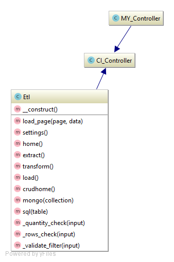

Main ETL Controller

Main controller handles data flow between views and models, it also perform data validation and build views from the templates.
Constructor
/**
* Etl constructor.
* Loads helpers, libraries
*/
function __construct()
{
parent::__construct();
//Load functions(helpers), classes(libraries), and models which we will use in controller
$this->load->helper(array('form', 'url','html','extract','transform'));
$this->load->library('form_validation');
$this->load->model(array('extract_model','transform_model','load_model','crud_model'));
//Set headers for application, turn off application-level caching
$this->output->set_header('Last-Modified: ' . gmdate("D, d M Y H:i:s") . ' GMT');
('Cache-Control: no-store, no-cache, must-revalidate, post-check=0, pre-check=0');
$this->output->set_header('Pragma: no-cache');
$this->output->set_header("Expires: Mon, 26 Jul 1997 05:00:00 GMT");
}
Page Loading Functions
Home page.
/**
* Function which loads
* Home ETL page http://base_url/home
*/
function home()
{
//Assign current page as home and toccurrent (we use it to mark second level in sidebar) as home
$data['current'] = 'home';
$data['toccurrent'] = 'home';
//Get amount of pages with items from allegro category and assign to pagesqty value
$data['pagesqty'] = $this->extract_model->getPagesQuantity();
//Get information from model which checkboxes are saved in database as default set of checkboxes
$data['choice'] = $this->transform_model->getChoice();
//Generate checkboxes and assign them to value. Here we use `transform_helper`
$data['checkboxes'] = generateCheckboxes();
//Get amount of rows in temp_products table from database and assign to `rowsqty` variable
$data['rowsqty'] = $this->load_model->getRowsQuantity();
//Create rules for configuration fields
$rules = [
[
'field' => 'amountOfPages',
'label' => 'Amount of pages',
'rules' => 'required|callback__quantity_check',
'errors' => [
'required' => 'Please, provide amount of pages to extract',
]
],
[
'field' => 'numrows',
'label' => 'Number of rows',
'rules' => 'required|callback__rows_check',
'errors' => [
'required' => 'Please, provide amount of rows to load',
]
],
[
'field' => 'fields[]',
'label' => 'Fields',
'rules' => 'required',
'errors' => [
'required' => 'Please, choose at least one attribute',
]
]
];
//Set those rules
$this->form_validation->set_rules($rules);
//Run form validation
if ($this->form_validation->run($this) === FALSE) {
//If it didn't pass OR user loads the page 1st time without completing any forms show him home page with data
$this->load_page('pages/home',$data);
} else {
//If validation passed DO:
//Run main processes of each step of ETL process and assign result to respective variables
$data['content']= [
'extract'=> $this->extract_model->runExtractorAsync($this->input->post('amountOfPages')),
'transform' => $this->transform_model->runTransform($this->input->post('fields[]')),
'load' => $this->load_model->runLoad($this->input->post('numrows'), 'etl_module'),
'cleanup' => $this->crud_model->cleanUp($this->input->post('cleanups[]'))
];
//Load page `home_result` with ETL process report
$this->load_page('pages/home_result',$data);
}
}
Extract page.
/**
* Function which loads
* Extract page http://base_url/extract
*/
function extract()
{
//Get current phase
$phase = $this->crud_model->get_phase();
//Set current phase to value which we got earlier from controller on line 95
$data['phase'] = $phase;
//Assign current page as extract and toccurrent (we use it to mark second level in sidebar) as nothing
$data['current'] = 'extract';
$data['toccurrent'] = '';
//Check if we can access this page based on current phase of application
if( $this->crud_model->check_restrictions($data['current'], $phase) === FALSE){
//If FALSE -> load page which tells us that we are on a wrong phase to access this module
$this->load_page('errors/html/error_wrongphase',$data);
}else {
//If TRUE -> we are on correct page according to current phase do:
//Get amount of pages with items from allegro category and assign to pagesqty value
$data['pagesqty'] = $this->extract_model->getPagesQuantity();
//Set rules for form validation: field amountOfPages has to be required and value has to pass `quantity_check` function
$this->form_validation->set_rules('amountOfPages', 'Amount of pages', 'required|callback__quantity_check');
//Set custom error message if previous rule failed
$this->form_validation->set_message('required', 'Please, provide amount of pages to extract');
//Check if validation according to previous rules passed
if ($this->form_validation->run($this) === FALSE) {
//If it didn't pass OR user loads the page 1st time without any forms show him extract_app page with data
$this->load_page('pages/extract/extract_app', $data);
} else {
//If we filled in form correctly and validation has passed DO:
//Run method `runExtractorAsync` from model with parameter from `amountOfPages` and assign result returned by it to variable `content`
$data['content'] = $this->extract_model->runExtractorAsync($this->input->post('amountOfPages'));
//After successful extract set current application phase to transform
$this->crud_model->set_phase('transform');
//Load page extract_result with `content` which contains report from model what was done during extract
$this->load_page('pages/extract/extract_result', $data);
}
}
}
Transform page.
/**
* Function which loads
* Transform page http://base_url/transform
*/
function transform()
{
//Get current phase
$phase = $this->crud_model->get_phase();
//Set current phase to value which we got earlier from controller on line 146
$data['phase'] = $phase;
//Assign current page as extract and toccurrent (we use it to mark second level in sidebar) as nothing
$data['current'] = 'transform';
$data['toccurrent'] = '';
//Check if we can access this page based on current phase of application
if( $this->crud_model->check_restrictions($data['current'], $phase) === FALSE){
//If FALSE -> load page which tells us that we are on a wrong phase to access this module
$this->load_page('errors/html/error_wrongphase',$data);
}else {
//If TRUE -> we are on correct page according to current phase do:
//Generate checkboxes and assign them to value. Here we use `transform_helper`
$data['checkboxes'] = generateCheckboxes();
//Set rules for form validation
//Checkbox array fields[] is required -> it means that ATLEAST one checkbox has to be checked
$this->form_validation->set_rules('fields[]', 'Fields', 'required');
//Set custom error message if previous rule failed
$this->form_validation->set_message('required', 'Please, choose at least one attribute');
//Check if validation according to previous rules passed
if ($this->form_validation->run() === FALSE) {
//If it didn't pass OR user loads the page 1st time without any forms show him transform_app page with data
//Get information from model which checkboxes are saved in database as default set of checkboxes
$data['choice'] = $this->transform_model->getChoice();
//Load transform_app page
$this->load_page('pages/transform/transform_app', $data);
} else {
//If we filled in form correctly and validation has passed DO:
//Send to model set of fields which we chose to transform and value of default_chb -> if we chose or not to save current set as default transform profile
$this->transform_model->setChoice($this->input->post('fields[]'), $this->input->post('default_chb'));
//Run main method of transform and pass to it set of checkboxes as a parameter which tells it which fields we want to aggregate and transform. And asign result of this function to content
$data['content'] = $this->transform_model->runTransform($this->input->post('fields[]'));
//After successful transform set current phase to load
$this->crud_model->set_phase('load');
//Load page transform_result
$this->load_page('pages/transform/transform_result', $data);
}
}
}
Load page.
/**
* Function which loads
* Load page http://base_url/load
*/
function load()
{
//Get current phase
$phase = $this->crud_model->get_phase();
//Set current phase to value which we got earlier from controller on line 203
$data['phase'] = $phase;
//Assign current page as extract and toccurrent (we use it to mark second level in sidebar) as nothing
$data['current'] = 'load';
$data['toccurrent'] = '';
//Check if we can access this page based on current phase of application
if( $this->crud_model->check_restrictions($data['current'], $phase) === FALSE){
//If FALSE -> load page which tells us that we are on a wrong phase to access this module
$this->load_page('errors/html/error_wrongphase',$data);
}else {
//If TRUE -> we are on correct page according to current phase do:
//Get amount of rows in temp_products table from database and assign to `rowsqty` variable
$data['rowsqty'] = $this->load_model->getRowsQuantity();
//Set rules for form validation
//Numrows field is required and has to pass `rows_check` function
$this->form_validation->set_rules('numrows', 'Number of rows', 'required|callback__rows_check', array('required' => 'Please, provide amount of rows to load'));
if ($this->form_validation->run($this) === FALSE) {
//If it didn't pass OR user loads the page 1st time without any forms show him load_app page with data
//Load load_app page
$this->load_page('pages/load/load_app', $data);
} else {
//If we filled in form correctly and validation has passed DO:
//Run main method of load and pass to it value provided in form via POST. And asign result of this function to content
$data['content'] = $this->load_model->runLoad($this->input->post('numrows'), 'load_module');
//After successful load set current phase to extract
$this->crud_model->set_phase('extract');
//Load page `load_result`
$this->load_page('pages/load/load_result', $data);
}
}
}
CRUD module home function.
/**
* Function which loads
* Homepage of CRUD module. http://base_url/crudhome
*/
function crudhome()
{
//Assign current page as `crudhome` and toccurrent (we use it to mark second level in sidebar) as empty
$data['current'] = 'crudhome';
$data['toccurrent'] = '';
//Load page crudhome
$this->load_page('pages/crud/crudhome', $data);
}
Mongo crud pages.
/**
* Function which loads mongo crud page http://base_url/mongo/XXXX
* @param $collection - show CRUD table on this collection
*/
function mongo($collection){
//If argument in adress bar ( base_url/mongo/XXXX ) is not a name of collection -> redirect to 404
if($collection !== 'products' && $collection !== 'aggregated'){
show_404();
}
//Assign current page as `crudhome` and toccurrent (we use it to mark second level in sidebar) as `mongo/XXXX` where XXXX is the name of collection
$data['current'] = 'crudhome';
$data['toccurrent'] = "mongo/$collection";
//Check for DELETE request from the page
if($this->input->post('delete') == 'X'){
//If such request came, do a cleanUp of current collection
$this->crud_model->cleanUp([$collection]);
}
//Set rules for form validation
//Filter field is required and has to pass `validate_filter` function
$this->form_validation->set_rules('filter', 'Filter', 'required|callback__validate_filter', array('required' => 'Please, provide filter'));
if ($this->form_validation->run($this) === FALSE) {
//If it didn't pass OR user loads the page 1st time without any forms, query collection with empty filter [] and assign result of query with empty filter to variable 'content'
$data['content'] = $this->crud_model->get_collection($collection, '[]');
//Load mongocrud page
$this->load_page('pages/crud/mongocrud', $data);
} else {
//If validation passed then perform query with filter which user provided and assign result of query with filter to variable 'content'
$data['content'] = $this->crud_model->get_collection($collection, $this->input->post('filter'));
//Load mongocrud page
$this->load_page('pages/crud/mongocrud', $data);
}
}
SQL crud pages.
/**
* Function which loads sql crud page http://base_url/sql/XXXX
* @param $table - show CRUD table on this table
*/
function sql($table){
//If argument in adress bar ( base_url/sql/XXXX ) is not a name of table -> redirect to 404
if($table !== 'products' && $table !== 'temp_products'){
show_404();
}
//Assign current page as `crudhome` and toccurrent (we use it to mark second level in sidebar) as `sql/XXXX` where XXXX is the name of table
$data['current'] = 'crudhome';
$data['toccurrent'] = "sql/$table";
//Check for DELETE request from the page
if($this->input->post('delete') == 'X'){
//If such request came, do a cleanUp of current table
if($table =='products'){
//If table is `products` perform a cleanup with 'sql_products' tag so it will not collide with mongo collection with the same name.
$this->crud_model->cleanUp(['sql_products']);
}else{
$this->crud_model->cleanUp([$table]);
}
}
//Check for GETCSV request from the page
if($this->input->post('getcsv') == 'Get CSV'){
//Make user download csv with data from last query
$this->crud_model->get_csv($this->input->post('last_query'));
}
//Set rules for form validation
//Query field is required
$this->form_validation->set_rules('query', 'Query', 'required', array('required' => 'Please, provide query'));
if ($this->form_validation->run($this) === FALSE) {
//If it didn't pass OR user loads the page 1st time without any forms, query database with `select *` and assign result of query with full response to variable 'content'
$data['content'] = $this->crud_model->getResult('select * from '.$table, $table);
//Load sqlcrud page
$this->load_page('pages/crud/sqlcrud', $data);
} else {
//If validation passed then perform query with query which user provided and assign result of last query to variable 'content'
$data['content'] = $this->crud_model->getResult($this->input->post('query'), $table);
//Load sqlcrud page
$this->load_page('pages/crud/sqlcrud', $data);
}
}
Validation Function
Amount of pages provided during Extract validation function.
/**
* Validation function, checks if amount of pages is not less then minimal and not bigger than maximum allowed
* @param $input - amount of pages provided by user
* @return bool - validation passed or not
*/
function _quantity_check($input)
{
//Get maximum pages quantity for current category from model
$max = $this->extract_model->getPagesQuantity();
if ($input > $max) {
//If input quantity of pages is higher than max - quantity check fails, return false
$this->form_validation->set_message('_quantity_check', '{field} can not be bigger than <b>' . $max . '</b>');
return FALSE;
} elseif ($input < 1) {
//If input quantity of pages is lower than 1 - quantity check fails, return false
$this->form_validation->set_message('_quantity_check', '{field} can not be smaller than <b>1</b>');
return FALSE;
} else {
//If it is more than 1 and less then maximum amount - quantity check succeeds, return true
return TRUE;
}
}
Amount of rows provided during Load validation function.
/**
* Validation function, checks if amount of rows is not less then minimal and not bigger than maximum allowed
* @param $input - amount of rows provided by user
* @return bool - validation passed or not
*/
function _rows_check($input)
{
//Get maximum rows quantity from table in database
$max = $this->load_model->getRowsQuantity();
if ($input > $max) {
//If input quantity of rows is higher than max - quantity check fails, return false
$this->form_validation->set_message('_rows_check', '{field} can not be bigger than <b>' . $max . '</b>');
return FALSE;
} elseif ($input < 0) {
//If input quantity of rows is lower than 0 - quantity check fails, return false
$this->form_validation->set_message('_rows_check', '{field} can not be smaller than <b>0</b>');
return FALSE;
} else {
//If it is more or equal 0 and less then maximum amount - quantity check succeeds, return true
return TRUE;
}
}
Mongo filter validation function.
/**
* Validation function, checks if filter provided by user is a correct filter for mongo db
* @param $input - filter string
* @return bool - validation passed or not
*/
function _validate_filter($input){
//Try to decode input string to json object
$json = json_decode($input, true);
if(json_last_error() == JSON_ERROR_NONE){
//If there were no errors during json encoding - validation passed, return true
return true;
}
//If there were any json errors, it means input string is not a valid json
//Set error message - validation failed, return false
$this->form_validation->set_message('_validate_filter', '{field} is not a valid JSON string. Check syntax in '.$input);
return false;
}
Assisting Functions
/**
* Function which builds page from templates
* @param $page - view to build
* @param $data - data to send to view
*/
private function load_page($page, $data)
{
//Load page from templates
$this->load->view('templates/meta');
$this->load->view('templates/sidebar', $data);
$this->load->view('templates/topbar', $data);
$this->load->view($page, $data);
$this->load->view('templates/footer');
$this->load->view('templates/script', $data);
}